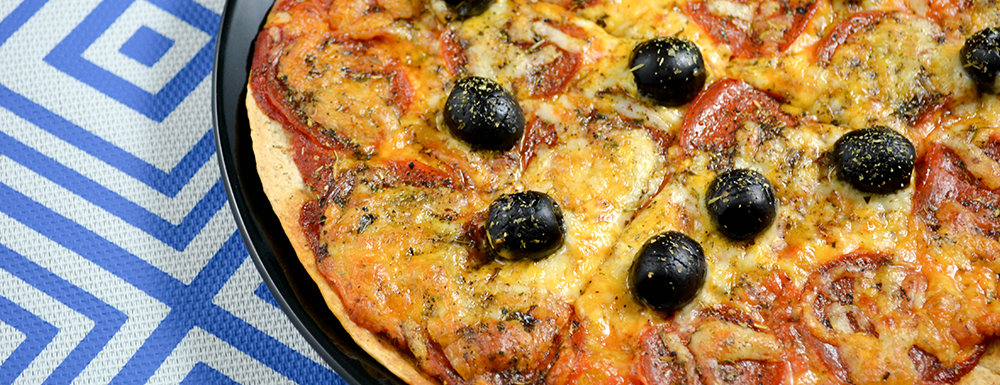

Protein Pizza

Air Fryer Pizza
This recipe is perfect when you need to make something quick,
tasty, and healthy. It is a light meal but has high volume so
it wont leave you hungry. Feel free to add veggies and no fat ranch
if you please.
Ingredients
- Low Carb Tortillas
- Pizza Sauce
- No Fat Mozzerella Cheese
- Turkey Pepperoni
- Turkey Breast Slices
- Grilled Chicken Pieces
Steps
On a spoon, scoop about 2 tbsp of pizza sauce and spread
onto low carb tortilla
Spread no fat mozzerella cheese onto the top
Circle around the turkey pepperonies
Cut up and spread your meats
Sprinkle more no fat mozzerella cheese on the top
Put into the air fryer for 6 min at 400 degrees
Macros
Each pizza should come out to 402 calories 55 grams of protein